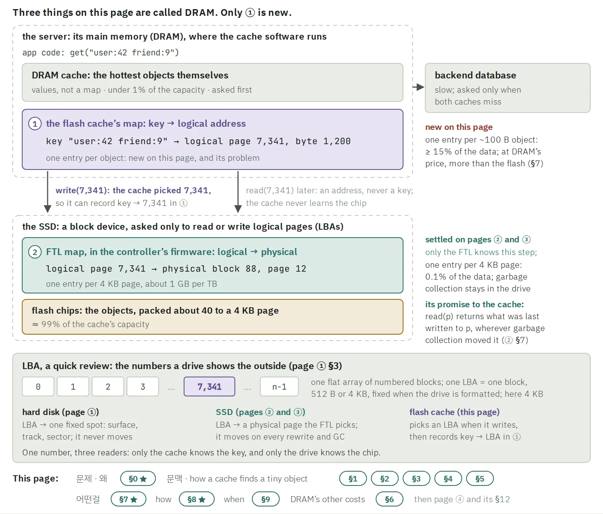
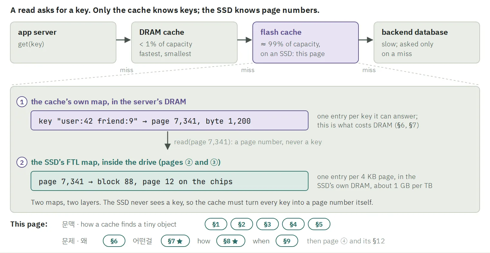

지금까지 만든 배경 페이지는 여섯 장입니다. 자료마다 어느 페이지가 됐는지 적었습니다. 남은 층을 위한 자료 28개는 맨 끝 next 에 따로 있습니다.
교과서OSTEP 37장Hard Disk Drives
①HDD 의 비용 모델
교과서OSTEP 44장Flash-based SSDs
② ③flash 와 FTL, GC 와 WA
교과서OSTEP 43장Log-structured File Systems
④LFS
영상 · 보조Branch EducationSSD 영상의 장면 열 개
②그림 옆에 장면으로만
논문 원문Flashield · Kangaroo · FairyWREN · Nemo · CacheLib3.5 의 숫자를 가져온 곳
3.5flash cache 의 문제
OpenStd 공개 자료대표님 인터뷰 · openstd.com · Vision · docs.rs2026-10-07, 10-11 에 읽음
OpenStdOpenStd 가 만드는 것
교과서는 그대로 읽지 않고, 장마다 물음 하나를 푸는 그림 페이지로 다시 만들었습니다. 영상은 그림을 돕는 장면으로만 썼습니다.
3 · 왜 책만이 아니라 AI 로
환각은 확률입니다. 엮어서 얻는 것이 그보다 훨씬 크다고 보았습니다
자료는 교과서와 논문 원문입니다. 그 자료를 AI 로 엮어 읽은 이유와, 환각을 어떻게 다뤘는지를 적습니다.
제 말
공부는 AI 로도, 책으로도, 강의로도 많이 해 봤다고 생각합니다. 사실 모델이 좋아지기 전까지는 AI 로 새로 배울 때 환각도 컸습니다(제가 잘못 사용했던 것일 수도 있습니다). 당연히 중간에 채워져야 하는 사고나 밑바탕이 오히려 안 채워질 때가 많았습니다.
하지만 제가 AI 를 쓰는 방식이 늘었습니다. 원래 쓰던 절차와, 어떤 식으로 연결하는지를 더 자세하게 다듬었고, 모델도 발전했습니다.
결론적으로, 다 확률이라고 생각합니다.
좋은 책에 잘 적혀 있어도, 제가 잘못 엮을 수 있습니다. 지식은 늘 필요에 의해 생긴다고 생각합니다. 그런데 교과서를 읽으면서 그 필요를 제가 혼자 만들어 나가는 일은 비용이 크고 힘듭니다. AI 로 그 일이 쉬워졌습니다.
when, why, how 로 잇고, 무슨 문제를 푸는지와 지식이 어떤 구조로 이어지는지를 보면서 얻는 이점이, 자료를 교과서로 해도 생기는 환각보다 훨씬 크다고 생각했습니다. 그리고 기존의 CS 지식과 AI 를 써 온 경험과 직관으로 그런 점을 고쳐 나가면, 손해를 낮출 수 있을 거라고 생각했습니다. 그래서 이렇게 공부하는 것이 더 맞다고 생각했습니다.
환각자료를 교과서로 해도 생깁니다. 틀린 수와 출처 없는 문장입니다.
엮어서 얻는 것when · why · how 의 연결, 무슨 문제를 푸는지, 지식이 이어진 구조입니다.
A교과서만으로 혼자 엮기
틀릴 수 있는 곳
좋은 책이라도, 제가 잘못 엮을 수 있습니다.
비용
필요에 따라 지식을 엮어 나가는 일을 혼자 합니다. 크고 힘듭니다.
B · 고른 것교과서 위에서 AI 로 엮기
틀릴 수 있는 곳
AI 의 환각입니다. 자료가 교과서여도 생깁니다.
비용
엮는 일이 쉬워졌습니다. 남는 일은 틀린 곳을 찾아 고치는 것입니다.
손해를 낮춘 방법
자료를 좁혔습니다사실은 교과서, 강의 슬라이드, 논문 원문에서만 가져옵니다. 영상은 장면으로만 쓰고, 블로그는 넣지 않습니다. 문단마다 출처 쪽을 답니다.
근거를 물었습니다막히거나 이상하면 "무슨 자료를 기반으로 했어?" 를 묻습니다. 기존의 CS 지식과 직관이 걸리는 곳을 알려 줍니다.
숫자는 원문과 맞댔습니다의심 가는 수는 논문 PDF 의 표와 그림에 다시 맞추게 합니다. 맞지 않으면 그 쪽을 다시 쓰게 합니다.
실제로 잡은 것
WA 를 1/(1−u) 하나로 셌습니다. 이 식으로는 15 가 나옵니다.FairyWREN Fig. 6 의 실측은 약 8 입니다. 그 줄을 고쳤습니다.
FairyWREN 을 쓰면 miss ratio 가 "조금 오른다" 고 적었습니다.논문 12쪽은 Kangaroo 보다 약간 낫다고 씁니다 (0.575 대 0.594).
Nemo 의 1.56 을 89% 채움의 역수로 풀었습니다.논문 §5.2 는 되돌려 쓴 객체를 새 쓰기로 세지 않습니다. 1.56 = 1 ÷ 0.6413 입니다.
FDP 를 설명한 문장 하나에 출처가 없었습니다.그 문장을 지웠습니다. 공개된 NVMe 표준 원문을 찾아 읽게 하고, 그 자료로 FDP 쪽을 다시 세웠습니다.
넷 모두 남은 층의 페이지(next)를 만들며 잡았습니다. 1–3 은 게시 전에 원문 PDF 와 맞대어 잡았고, 4 는 제 질문에서 나왔습니다.
4 · 왜 이렇게 정했나
10배를 깎는 세 가지로, OpenStd 의 선택을 추론했습니다
청구서를 식 하나로 쓰면, 10배는 가격비가 정한 상한입니다. 설계는 거기서 깎기만 합니다.
DRAM cache ÷ flash cache = r ÷ ( o + r·e/s )
o 는 1 이상이고 e/s 는 0 이상입니다. 그래서 이 비율은 r 을 넘지 못합니다. r 에 닿는 것은 o = 1, e = 0 일 때뿐입니다.
r ≈ 10byte 당 DRAM 가격 ÷ flash 가격. 상한을 정합니다.
e/s · mapobject 하나를 찾는 데 드는 DRAM. 15 B 면 4.0×, 7 bits 면 9.2× 가 남습니다.
o · write사 놓고 비워 두거나 일찍 닳게 하는 flash. 절반을 비우면 9.2× 가 4.8× 로 돌아갑니다.
CPU · server식에 없는 세 번째. 같은 요청을 더 적은 machine 으로 받아야 합니다.
공고의 논문 다섯 편이 이 셋을 어떻게 나눠 맡는지는, 맨 끝 next 에서 그림 하나로 봅니다.
A
Rust 와 io_uring 은 ③ CPU 에 대한 답으로 읽었습니다.io_uring 은 system call 하나로 I/O 여럿을 냅니다. Rust 는 GC 없이 memory 배치를 손으로 정하고, thread 사이의 data 공유를 compiler 가 검사합니다. OpenStd 가 밝힌 이유가 아니라, 공개된 설계에서 제가 끌어낸 추론입니다.
숫자의 출처 보기
r ≈ 10 은 Flashield Table 1 입니다. map 15 B 는 3.5 페이지의 문제 절, 7.0 bits 는 Kangaroo 입니다.
OSTEP 44장 Flash-based SSDs, Branch Education 의 SSD 영상 (장면 열 개)
푸는 문제
움직이는 부품을 없애, seek 와 rotation 을 없앱니다.
작동 원리
cell 이 1–3 bits 를 전하로 담습니다. page(~4 KB)로 읽고 쓰고, block(128–256 KB)으로 erase 합니다. erase 는 block 을 1 로, program 은 1 을 0 으로만 바꿉니다. 그래서 FTL 이 새 판을 늘 빈 page 에 쓰고(log), 어디 있는지 map 에 적습니다.
남기는 문제
garbage 가 쌓이고, map 이 크고, wear 가 고르지 않습니다. block 하나는 약 10,000번의 erase 를 견딥니다 (MLC).
SSD 는 영상으로 구조를 먼저 보고 들어갔습니다. cell 의 SLC / MLC / TLC 와 operation 셋에서 출발해, 왜 block 단위로 erase 하는지를 물었습니다. 그 제약이 wear 와 WA 를 낳고, direct mapping 이 안 되는 이유를 지나 log-structured 로 이어졌습니다.
큰 회사의 cache 가 왜 DRAM 만으로는 안 되는지에서 출발해, SSD 로 옮기면 무엇이 문제인지를 봤습니다. object 하나를 page 하나에 둘지, 40개를 묶어 담을지까지 읽었습니다.
큰 회사의 cache 구조
왜 DRAM 만으로는 안 되나
SSD 로 옮기면무엇이 문제인가
page 하나에 하나 vs 40개 묶기40개를 무엇으로 묶나
set-associative · Bloom filter여기서 멈춤 · next 에서
다음 장을 부른 열쇠읽는 방법멈춘 자리
여기서 다음으로 · 제 말
지금
④ 를 이어서 읽고, 남은 층은 next 의 공부 지도로 학습합니다.
궁금한 것
소프트웨어가 SSD 를 어떻게 다뤄야, WA 와 DRAM 을 함께 줄일 수 있을까?data 를 어디에, 어떤 단위로 쓰고, GC 를 누가 맡을지를 host 가 정하는 관점입니다 (ZNS, FDP).
해 보고 싶은 것
그 소프트웨어를 실제 업무로 만들어 보고 싶습니다.
Next · 남은 층의 설계
남은 층은, 바탕을 먼저 쌓고 논문에는 맨 끝에 닿도록 설계해 두었습니다
CMU 15-445 의 슬라이드 여섯 편과 책 두 권, 그리고 논문 원문을 25쪽으로 나눴습니다. 쪽 하나가 물음 하나입니다.
구성 · 뿌리 물음 하나, 가지 일곱, 25쪽
①1 · 뿌리 물음 · big picture작은 object 를 flash 에 cache 하면 무엇이 부딪히나WA, DRAM per object, miss ratio 는 함께 줄지 않습니다
①1.1flash SSD: 4 KB 로 쓰고 크게 erase
③1.1.1빠른 SSD 에서는 CPU 가 병목
①1.2buffer pool
②1.2.1eviction: LRU · CLOCK · FIFO
②1.2.2write-back 과 commit log
②1.3in-place update 냐, append 냐
②1.3.1LSM 과 compaction
③1.3.2정렬 없는 log + DRAM index
③1.3.3log 위의 log 와 zoned SSD
③1.3.3.1FDP
②1.4cache 는 store 와 다르다
③1.4.1세 비용을 숫자로
④1.4.2admission
④1.5set-associative
④1.5.1balls into bins
④1.6Bloom filter
④1.6.1false-positive rate 와 bits per element
④1.7논문 여섯 편을 한 표로
⑤1.7.1KVell
⑤1.7.2Flashield
⑤1.7.3CacheLib
⑤1.7.4Kangaroo
⑤1.7.5FairyWREN
⑤1.7.6Nemo
①–⑤ 읽는 단계단계를 닫는 big picture6장에서 멈춘 자리논문 (맨 끝)가로 줄: 앞 쪽이 뒤 쪽을 부른다
가지끼리는 이렇게 이어집니다부모와 자식 줄 말고, 한 쪽이 다른 쪽을 부르는 줄 여섯입니다. 트리 위에 하나씩 그어집니다.
ⓐ1.1 → 1.3flash SSD → appendflash 는 제자리에서 고칠 수 없습니다. 그래서 끝에 덧붙여 쓰는 쪽이 장치와 맞습니다.
ⓑ1.1.1 → 1.7.1CPU 병목 → KVellNVMe 에서는 random 과 sequential 이 비슷하고 CPU 가 병목입니다. KVell 은 그래서 정렬과 commit log 를 버립니다.
ⓒ1.3.2 → 1.7.5log + DRAM index → FairyWRENzoned SSD 는 GC 를 응용에 넘깁니다. FairyWREN 은 그 GC 를 cache 의 eviction 과 함께 설계합니다.
ⓓ1.4.1 → 1.5세 비용 → set-associativeobject 당 DRAM 을 줄이려고, hash 로 set 을 정해 object 별 index 를 없앱니다.
ⓔ1.5 → 1.7.4set-associative → Kangarooset 에 object 를 하나씩 넣으면 4 KB 를 매번 다시 씁니다. Kangaroo 는 모아서 넣으려고 작은 log 를 앞에 둡니다.
ⓕ1.4.1 → 1.7.6세 비용 → Nemozoned SSD 로 DLWA 가 낮아진 뒤에도, set 을 다시 쓰는 ALWA 가 남습니다.
읽는 순서는 component 몇 쪽을 읽고 big picture 한 쪽으로 모으는 것을 다섯 번 되풀이합니다. 논문 여섯 편은 맨 끝입니다. 공부 지도의 쪽들은 강의 슬라이드와 책의 그림을 담고 있어 공개하지 않고, 구조만 그림으로 보입니다.
자료 · 28개를 깊이 순서로
기준은 하나였습니다. 슬라이드와 책이 강의 영상보다 먼저이고, 블로그는 넣지 않습니다.
TIER 1슬라이드와 책논문이 쓰는 데이터베이스 어휘의 바탕
CMU 15-445 Fall 2025 슬라이드 여섯 편722쪽 · #03 #04 #05 #07 #08 #09강의 노트 여섯32쪽 · 슬라이드의 문장판Silberschatz, Database System Concepts 7판코스 지정 교재Petrov, Database Internals같은 논점을 슬라이드보다 깊게
TIER 2논문 원문공고의 다섯 편과, 그 다섯 편이 서는 바닥
KVellSOSP 2019FlashieldNSDI 2019KangarooSOSP 2021FairyWRENOSDI 2024NemoASPLOS 2026CacheLibOSDI 2020 · Kangaroo 가 선 엔진ZNSATC 2021 · zone 의 원 논문FDP 표준 원문과 논문, 발표, 백서10/11 추가 · 아래 세 번째 카드
TIER 3강의 영상사실은 가져오지 않음
CMU 강의 영상 여섯 편의 자막강조와 예시가 필요한 자리에만, 시각 링크로
OUT뺀 것이유가 있는 것만 적었습니다
블로그 글Meta 엔지니어링 블로그의 Kangaroo 소개 글 포함학생 발표 자료저자 발표가 아님DDIA 2판 4장같은 자리를 Petrov 와 Silberschatz 가 더 깊게 덮음15-445 의 컬럼 저장, B+tree 본체, vector index논문 다섯 편이 가는 길 밖
영상 대신, 그림이 든 페이지로 읽었습니다
Q · 제 질문이미지만 잘 나누면 강의 자체보다 이게 나을 수도 있다고 생각하는데?
슬라이드 그림은 맞는 설명 바로 밑에 붙였습니다. 한 페이지는 물음 하나를 풉니다.
사실은 슬라이드와 노트와 책에서만 가져왔습니다
대조 읽기AI 에게 슬라이드 722쪽, 노트 32쪽, 책 두 권을 쪽마다 맞대게 했습니다.
어느 자료가 어느 물음을 덮는지 표로 남겼습니다. 자막은 강조와 예시에만 썼습니다.
자료에 없는 자리는, 자료를 더 구해서 채웠습니다
Q · 제 질문ZNS 와 FDP 가 무엇을 하는지 이론 설명이 들어가야 할 것 같은데, 이건 무슨 자료를 기반으로 했어? 자료 조사를 하고 고쳐야 하지 않나?
FDP 는 원문이 없었습니다. 공개된 NVMe 표준 원문(TP4146)과 논문 하나, 발표 하나, 백서 하나를 찾아 읽게 하고, 그 자료로 쪽을 다시 세웠습니다.
왜 이렇게 · 제가 정한 것
제 말구조의 핵심은, 논문 전에 그 기반 지식을 익힌 상태로 논문에 닿아야 한다는 거야.
제 말부품이 무슨 문제를 푸는지, 다시 큰 그림. 이런 식으로 왔다 갔다 할 수 있게.
✓
15-445 에서는 슬라이드 여섯 편만 골랐습니다.논문 본문이 쓰는 어휘가 거기 있습니다. KVell 한 편에 LSM 이 64번, B tree 가 32번, page cache 가 22번 나옵니다.
37 / 57설계 전에 데이터베이스 용어 57개를 직접 찍었습니다. 안다 11, 들어봤다 9, 모른다 37 이었습니다.
논문 높이깊이는 "논문 높이까지, 그 안은 제대로" 입니다. 논문이 이름만 부르는 것은 저도 이름만 둡니다.
25쪽다섯 단계로 읽고, 각 단계는 big picture 한 쪽으로 끝납니다. 읽다 막힌 쪽은 고치거나 자식 쪽으로 뗍니다.
무엇을 풀려고 · 논문 다섯 편을 조건 셋으로
"OpenStd 가 만드는 것" 페이지의 그림 3 을 그대로 가져왔습니다 (Nemo 의 학회 표기만 원문 PDF 에 맞춰 고쳤습니다). 10배를 깎는 세 조건에, 다섯 편이 한 열씩 붙습니다. 보라 줄은 OpenStd 가 OpenKache 를 소개한 세 구절입니다. 남은 층을 읽고 나면 칸마다 왜 그 숫자인지를 말할 수 있어야 합니다.
원본 그림 · OpenStd 가 만드는 것 · 그림 3
논문
① map · object 당 DRAM
② write · flash 에 쓰는 양
③ CPU · server 수
FlashieldNSDI 2019
① map약 30 bits, 여전히 object 마다 entry 하나
② write다시 읽힐 것으로 보이는 object 만 받는다
③ CPU—
KangarooSOSP 2021
① mapobject 당 7.0 bits
② writerewrite 5.8, 그냥 set 이면 약 40
③ CPU—
FairyWRENOSDI 2024
① mapKangaroo 의 배치
② writeflash write 12.5× 감소 (ZNS, FDP 위)
③ CPU—
NemoASPLOS 2026
① map8.3 bits
② write전체 WA 1.56
③ CPU—
KVellSOSP 2019
① map— cache 가 아니라 store
② write—
③ CPUcore 마다 공유 없음, I/O 를 모아 냄, 정렬 안 함
OpenKacheOpenStd 의 자기 소개
① map“a DRAM-resident index”
② write“NVMe-backed data”
③ CPU“scale across CPU cores with minimal sharing”
숫자는 논문마다 자기 trace 에서 잰 값입니다. 그래서 한 눈금 위에 있지 않습니다.
결론적으로
OpenStd 가 어떤 문제를 풀고 무엇을 하려는지 이해하고, 같이 이야기해 볼 수 있는 지식을 만들려고 노력했습니다.
남은 층의 공부 지도도 같은 목표를 향해 설계했습니다.
이 과정에서 보여 드리고 싶었던 것
블랙박스 없이 직접 해결하고, 새로운 것을 깊게 계속 공부하는 사람
1
모르는 분야를 바닥부터 배웁니다잘 모르던 데이터베이스를, 아는 것은 건너뛰고 잊은 것은 복구하고 처음 보는 것은 새로 쌓아, 공고가 고른 논문 다섯 편의 입구까지 갔습니다.
2
AI 가 만든 결과를 그대로 믿지 않습니다막힌 곳을 짚고, 그 자리의 그림을 다시 그리게 했습니다.
3
배운 것을 구조로 만듭니다그림으로 압축하고, 바탕에서 논문까지 순서를 설계했습니다.
Flash 와 FTL
문제: cache 의 map 이 DRAM 을 먹는다

그림 1 · 질문을 받고 고친 판
강점 2 · AI 가 만든 결과를 그대로 믿지 않습니다
막힌 곳에서 멈추고, 그 자리의 그림을 다시 그리게 했습니다
AI 에게 논문과 책을 읽혀 그림 페이지를 만들게 했습니다. 저는 읽다가 막힌 곳을 짚었고, 그때마다 같은 그림을 다시 그리게 했습니다.
Q · 10/11 새벽[페이지 ③] 에서 FTL 과 DRAM map 이야기를 다 하고 왔는데, 3.5장은 어떤 문제를 다시 시작하는 거지?
QDRAM 은 page 를 알 수 없지 않나? logical address 정도만 아는 거 아닌가?
Q그럼 모르는데 매핑을 어떻게 해?
고친 곳 · 같은 페이지, 새 판server 와 SSD 를 두 틀로 가르고, cache 는 logical address 까지만 안다고 적었습니다. 쓸 때 cache 가 address 를 고른다는 화살표와 LBA 복습을 더했습니다.

자세히 보기
이 페이지 끝의 질문 표는 10줄에서 17줄로 늘었습니다. 질문마다 답한 절이 적혀 있습니다.